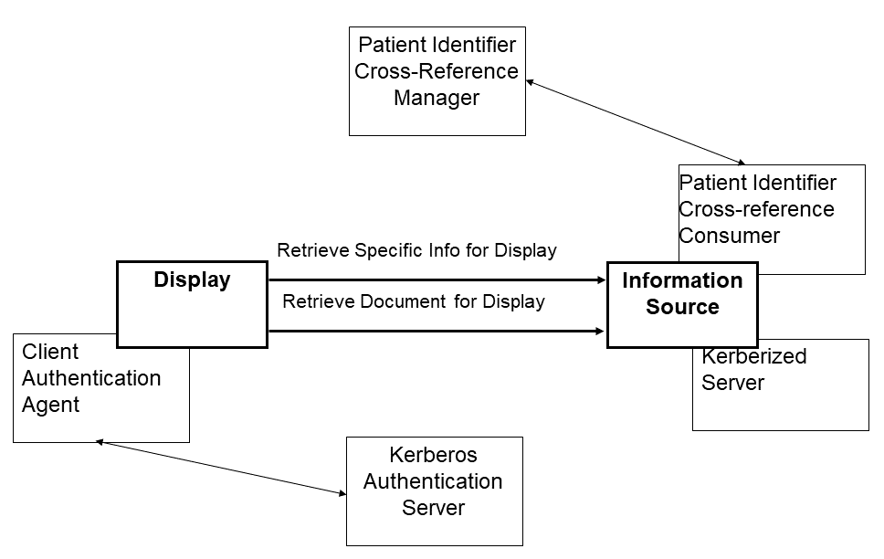
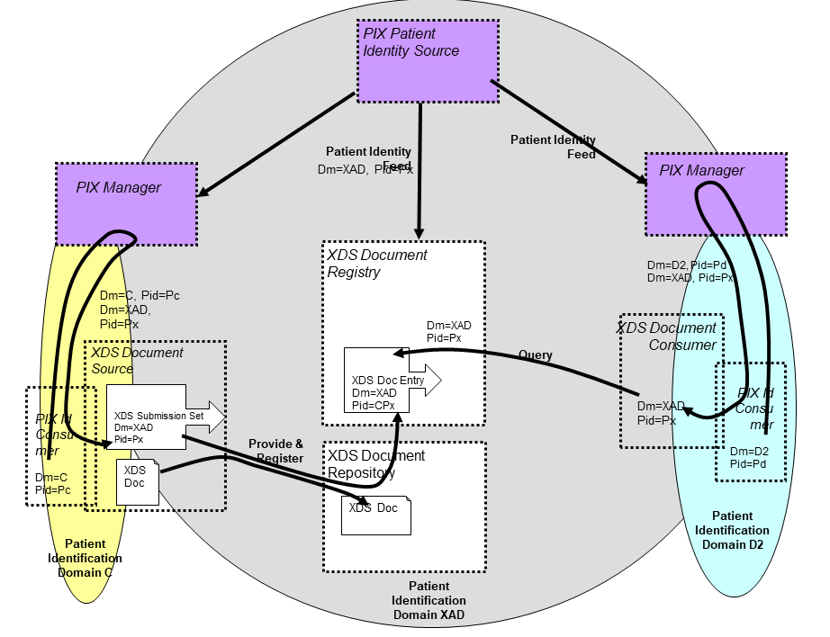
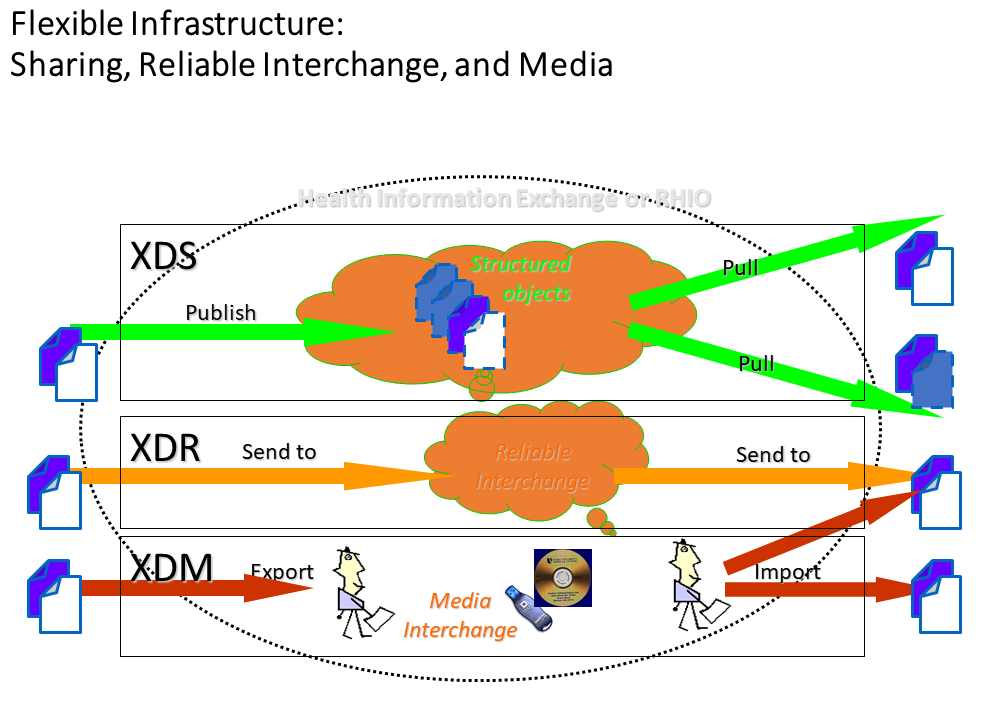
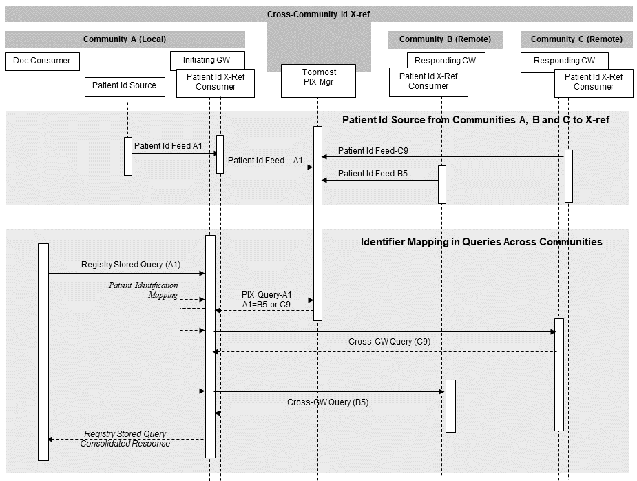
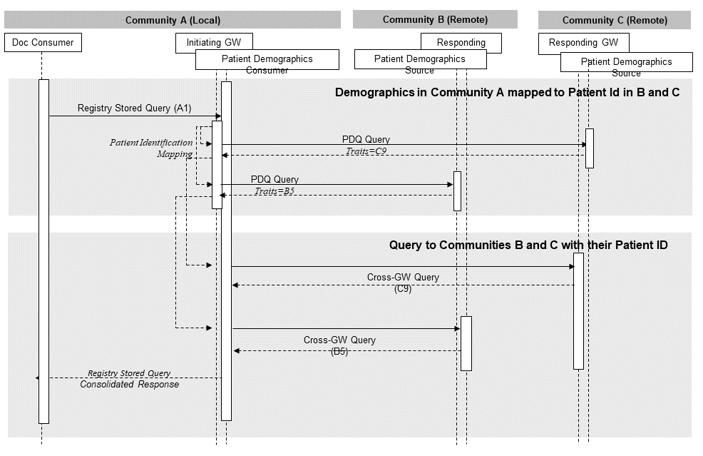

Appendix E: Cross Profile Considerations
E.1 Combined use of RID, EUA and PIX Integration Profiles
When used alone, the Retrieve Information for Display Integration Profile assumes that the Patient Identifier Domain is the same for both the Display and the Information Source Actors. Furthermore, any user authentication on the Information Source is not addressed explicitly. This Appendix discusses combination of the Retrieve Information for Display Integration Profile with other IHE Integration Profiles to address these two problems.
When used in conjunction with the Patient Identifier Cross-referencing Integration Profile, implementations of the Retrieve Information for Display Integration Profile shall take into account that the Information Source may need to map Patient IDs from different identifier domains to the one used in its own domain. The combined use of these Integration Profiles is achieved by grouping the Information Source and the Patient Identifier Cross-reference Consumer Actors. This is depicted in Figure E-1.
Similarly, the Information Source may perform certain access control functions based on the requesting user authentication performed by the actors implementing the Enterprise User Authentication Integration Profile. The combined use of these Integration Profiles is achieved by grouping the Display with the Client Authentication Agent and the Information Source with the Kerberized Server. This is also shown in Figure E-1.
Figure E-1: Combined use of actors implementing multiple Integration Profiles
The RID Retrieve Document for Display [ITI-12] transaction was compatible with the XDS.a Retrieve Document [ITI-17] transaction. Thus, an RID Information Source implementing the Retrieve Document for Display transaction could be used to implement the XDS.a Retrieve Document transaction. In this instance, the RID Information Source must be a Secure Node (see ATNA).
Note: The XDS.a Profile is now deprecated. RID is not compatible with the XDS.b Retrieve Document Set [ITI-43] transaction.
All Patient IDs managed in the XDS transactions (either in XAD-Pid Domain or in an EHR-CR Domain) shall include the related Patient Domain ID (OID of the Assigning Authority) associated with the patient ID. It is recommended that this unambiguous patient identification be used with Patient IDs within the Documents also.
Because XDS is Document content neutral, there is no verification by the XDS Repository that the Patient IDs included inside the documents are consistent with the patient IDs managed by the Registry in the document entry related to that document.
Figure E.3-1: XDS Affinity Domain with patient ID cross-referencing with IHE PIX Managers
Figure C.6-1 depicts an example of an XDS Affinity Domain with a Patient Identifier Domain (called XAD) and two EHR-CRs where the cross-referencing is performed by Patient Identifier Cross Referencing Managers internal to both the Document Source and the Document Consumer Domains (called C and D2 respectively).
A Document Source may choose to perform the cross-referencing of its own patient IDs in that of the XAD-Pid Domain by leveraging the IHE PIX Integration Profile (see figure). The Patient ID Feed Transaction from the XAD Patient ID Source may be used to provide input to the Patient Identifier Cross-Referencing Manager used by the Document Source. The PIX manager may either be internal to the EHR-CRs or be shared across the XDS Affinity Domain.
The XDS Document Source in the XDS Integration Profile may choose to utilize the PWP Query Personnel White Pages [ITI-24] transaction to obtain information needed to fill the authorPerson and legalAuthenticatorName fields for the Register Document Set–b [ITI-42] and Provide & Register Document Set–b [ITI-41] transactions.
The Personnel White Pages transaction defines, in ITI TF-2: 3.24.4.1.2.3.1, a “cn” attribute with “lang-x-ihe” that contains the information in the HL7 XCN (extended composite ID number and name for persons) format for personal information. These fields are optional in the PWP Integration Profile. A care delivery organization may choose to populate these fields in their Personnel White Pages Directory and utilize the [ITI-24] transaction to support its XDS activities. This is not a required dependency, but is a possible reason to group a Document Source with a Personnel White Pages Consumer.
The PWP Integration Profile only provides the personnel information. Organizational information must be obtained via other means, e.g., extending the LDAP directory with organizational objects.
The Patient Demographics Query (PDQ) Integration Profile may be used in conjunction with the XDS Integration Profile to provide a lookup for XDS Affinity Domain Patient Identifiers to XDS Document Consumer and Document Source Actors. In this case a Patient Demographics Supplier needs to be grouped with the XDS Patient Identifier Source on one hand, and on the other hand a Patient Demographics Consumer needs to be grouped with the Document Source/Consumer where one may want to query based on local patient traits and obtain a pick-list of candidate Patient Ids in the XAD Patient Identifier Domain. This offers a simpler solution that the use of the PIX Integration Profile.
E.6 XDM Integration with XDS, Content Integration Profiles, PIX, and DSG
The XDM Profile does not constrain the document types or purposes. Content Integration Profiles may impose such constraints.
The XDM Profile does not address the issue of patient reconciliation. The PIX and PDQ functionality might be available to a Portable Media Importer, but the XDM Profile does not require it. If there is no PIX or PDQ available to the Portable Media Importer, some other method for performing the necessary coercion of patient identifiers must be provided. This might be manual for Portable Media Importers that are intended for very small sites.
The Cross-enterprise Document Media Interchange (XDM) Integration Profile may be used in conjunction with the DSG Profile to provide for the digital signature of the documents content and of the XDS metadata.
Both XDR and XDM describe the exchange of a set of patients’ documents. They are relevant in situations where XDS is not yet implemented or available at one of the participating organizations or where point-to-point (versus sharing through a registry) interaction is desired.
XDM is applicable in situations where the information receiver is an individual who will manually interpret or examine the data and associated documents. XDM allows for one exchange which contains documents relating to multiple patients and can be used in situations where no continuous networking capability is available on one or both of the participating healthcare providers.
XDR is applicable in situation where the information exchanged is going to an automated application or robust system capable of automated storage or process of documents relative to one patient. XDR requires continuous networking capability between the healthcare providers exchanging data.
E.8 XDR Integration with XDS, Content Integration Profiles, PIX, and DSG
E.8.1 XDR Integration with XDS
The XDR Profile and the XDS Profile are both similar and complementary.
Both profiles are document content neutral, conveying documents without modification and managing the same set of metadata. They both enable a Document Source to transmit a set of documents to another IHE actor, using a HTTP based on-line mode or a SMTP based off-line mode.
But they do differ in some important ways. XDS is a centralized profile with “servers” (Registry and possibly Repository) and “clients” (Source and Consumer). XDR is more symmetrical (Source and Recipient).
If the Document Source and the Document Recipient belong to the same Affinity Domain, the metadata shall respect the rules defined for this Affinity Domain (patientId, assigning Authority, encoding schemes…).
In case the actors are not all part of the same Affinity Domain, the following options should be considered:
- If the Document Source is sending the Document Set to a Document Repository while sending it to the Document Recipient(s) at the same “time” (consequent network on-line messages), then the rules defined in the Affinity Domain which includes the Document Source and the Document Repository shall be used.
- In the other cases:
- If the Document Source and the Document Recipient(s) have agreed on the rules to use (for example using a “regional patientId” accessible through a PIX compliant server), then these rules shall be used.
Note: it is highly recommended to define such “mutual agreement”
- If not, the rules available on the Document Source side will be used, and so, the Document Recipient has to transpose the patientId and the codes to follow its local rules.
The Cross-enterprise Document Reliable Interchange (XDR) Integration Profile may be used in conjunction with the XDS Integration Profile to provide both a cross-enterprise sharing capability and a targeted sending of a set of documents to one or more specific receivers. This is illustrated in the figure below when the Document Source supports both the XDS and the XDR Integration Profiles.
Figure E.6-1: Associated XDS, XDR, and XDM Profiles
E.8.2 XDR Integration with XDS Content Integration Profiles
The Cross-enterprise Document Reliable Interchange (XDR) Integration Profile is intended to be used in conjunction with any number of XDS Content Integration Profiles to provide an interoperable specification for the content of the documents interchanged. Any XDS Content Integration Profile such a XDS-SD for scanned documents (see IT Infrastructure Technical Framework) or XDS-MS for medical summaries (see Patient Care Coordination Technical Framework) are examples of document content Integration Profiles that may be integrated along with XDR. One should note that although these Content Integration Profiles are called XDS-Scan or XDS-MS, the use of the XDS in their name does not imply that their use is restricted to XDS. It is equally intended for XDR, for point-to-point interchange.
E.8.3 XDR Integration with PIX
The Cross-enterprise Document Reliable Interchange (XDR) Integration Profile may be used in conjunction with the PIX Integration Profile to provide the cross-referencing or linkage of the patient identifier used by the Document Source with that of the Document Receiver. This Integrated use requires the grouping of the XDR Document Source and of the XDR Document Receiver with a PIX Patient Identity Source, so that the PIX Manager is fed with the patient identities in the Document Source and the Document Receiver identification domains. In addition, the Document Recipient shall be grouped with a PIX Patient Identifier Consumer, so that when a patient Identifier is received in the XDS Document Metadata of the XDR Provide and Register Document Set transaction, it may invoke the services of the PIX Manager to cross-reference the received patient identifier to a patient identifier of the Document Recipient Identification Domain.
E.9 XCA Integration with XDS and non-XDS communities
This section is informative and suggests some potential configurations that may be used by a community. The following types of community are described:
- An XDS Affinity Domain
- A non-XDS Affinity Domain
- A collection of XDS Affinity Domains
- A collection of non-XDS Affinity Domains
- An XDS Affinity Domain with a “transparent” Gateway
E.9.1 An XDS Affinity Domain
In the example below, the responding community is an XDS Affinity Domain which is served by a Responding Gateway.
Figure E.9.1-1: XDS Affinity Domain
E.9.2 A Non-XDS Affinity Domain
In the example below, the responding community is served by a Responding Gateway. However, within this community, there is no XDS Document Registry or Repositories. A proprietary mechanism is used by the Responding Gateway to gather data for the response to the Cross Gateway Query and Cross Gateway Retrieve transactions.
Figure E.9.2-1: Non-XDS Affinity Domain
E.9.3 A Collection of XDS Affinity Domains (informative)
In the example below, one Responding Gateway is serving two communities. Each one of these communities is an XDS Affinity Domain served by its own Responding Gateway; these two Responding Gateways are hidden from the initiating community.
This example is informative only. The XCA Profile does not specifically support this configuration and does not address all the considerations of such a configuration.
Figure E.9.3-1: Collection of XDS Affinity Domains
E.9.4 A Collection of Non-XDS Affinity Domains (informative)
In the example below, one Responding Gateway is serving two communities. Each one of these communities is a non-XDS Affinity Domain served by its own Responding Gateway; these two Responding Gateways are hidden from the initiating Community.
This example is informative only. This profile does not specifically support this configuration and does not address all the considerations of such a configuration.
Figure E.9.4-1: Collection of Non-XDS Affinity Domains
E.9.5 An XDS Affinity Domain with a “Transparent” XCA Gateway (informative)
In the example below, the initiating community is an XDS Affinity Domain where the Initiating Gateway is grouped with the XDS Affinity Domain Document Registry. Thus, the Document Consumer interacts with one system to retrieve both local and non-local data. This is called “transparent Gateway” as the Document Consumers do not see the cross-domain communication explicitly, but it is hidden by the Domain Registry and a Proxy Repository. Configuration would be needed to instruct the Document Consumer to interact with the Initiating Gateway when a non-local repository identifier was found in the metadata. In this way the Document Consumer interacts with the Initiating Gateway as a Proxy repository.
This diagram also shows a Responding Gateway grouped with a Document Registry.
This example is informative only. This profile does not specifically support this configuration and does not address all the considerations of such a configuration
Figure E.9.5-1: An XDS Affinity Domain with a “Transparent” XCA Gateway
E.10 XCA and Patient Identification Management
This section describes two models for resolving the patient identity in a cross-community exchange environment. As the XCA Profile is not intended to address patient identification management, it is therefore necessary to combine XCA with appropriate identification management Integration Profiles. This section is informative and describes only two possible ways to resolve patient identification relying on the existing two IHE Integration Profiles in this domain, Patient Identifier Cross-Referencing (PIX) and Patient Demographics Query (PDQ). The description in this section is only at a high level and more details (not covered here) are necessary for implementation of these models. Other models for patient identification exist and will not be described in this section. Future work by the IHE IT Infrastructure Technical Committee may support more sophisticated approaches.
E.10.1 Patient Identification using PIX
The following diagram describes a mechanism for managing patient identities where there is topmost PIX which cross references between communities A, B and C. This diagram assumes that a Responding or Initiating Gateway for each community interacts in order to drive a patient identity feed to the topmost PIX. The diagram does not include processing on the remote communities (B and C) to respond to the query request. The topmost PIX is not defined in this example, but can be assumed to be a PIX Manager, or equivalent, which is accessible to all communities.

Figure E.10.1-1: Patient Identification using PIX
E.10.2 Patient Identification using PDQ
The following diagram describes one approach to patient identification in a cross-community exchange where there is no entity which can cross reference between local and remote identifiers. Note that interactions among entities in remote communities (B & C) are not detailed in this diagram.
Figure E.10.2-1: Patient Identification using PDQ
This diagram present a basic approach relying on the existing IHE Patient Demographics Query (PDQ) Integration Profile by the Initiating and Responding Gateways, where the Responding Gateway respond to queries with patient demographics traits for potential patients in the community it serves, thus allowing Initiating Gateways to obtain the patient Id to use in the Cross Gateway Query. The result of this transaction would be a) zero, indicating the patient does not have records at that community b) one, indicating the gateway was able to uniquely identify the patient c) multiple, indicating the Responding Gateway was not able to uniquely identify the patient. In the case of a) or b) the transaction is complete and does not require human intervention. If multiple results are returned this requires human intervention to resolve.
This approach requires a significant number of policy decisions to be in place, coordinated with privacy consent in cross-community environment that are well beyond the scope of the combined use of PDQ and XCA presented in Figure E.10.2-1. In addition, the integration of a large number of communities with a large number of non-overlapping patient populations is likely to require addressing significant scaling issues in allowing Responding Gateways to process the requests for identity resolution.
Future IHE work in this area may offer more sophisticated integration profiles that could be combined with XCA.